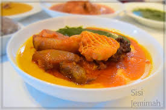

Gbegiri Recipe

Description
This Nigerian dish is very famous among the people of Yoruba tribe and it is so delicious
Ingredients
- black-eyed peas or brown beans, peeled
- palm oil
- Ground crayfish
- Salt
Steps to be followed
- Boil assorted meat till tender with seasoning and salt. Separate stock from meat and set aside
- Blend cooked beans in a blender for a smooth puree and set aside (I love this bit as you can see the silkiness of the beans)
- Place a cooking pan on medium heat, add palm oil and heat for about 3 minutes (don’t bleach oil)
- And so on...